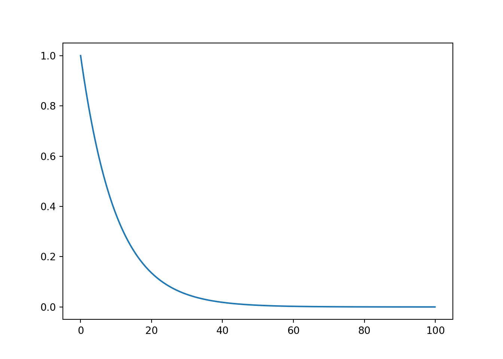
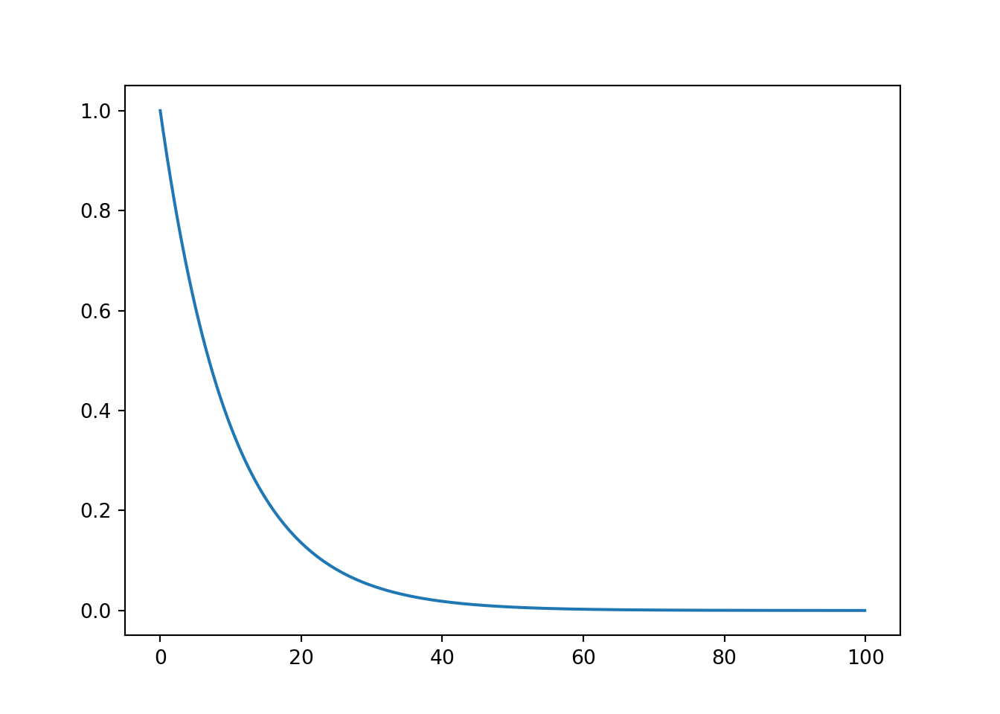

from scipy import stats
import numpy as np
import matplotlib.pyplot as plt
xs = np.arange(0,100,0.1)
s_t = stats.expon(0,10).sf(xs)
f_t = stats.expon(0,10).pdf(xs)
plt.plot(xs,s_t)
With survival analysis we aim to model lifetimes or populations. Survival analysis is unique as it aims to include censoring.
https://www.youtube.com/watch?v=7_XK7mGMm1E&list=PLoROMvodv4rOzrYsAxzQyHb8n_RWNuS1e&index=79
We are interested in two types of cencoring
The fundamental probaility theory required is as follows
Let \(T\) be the failure time, where \(T>0\). Then as expected the distribution function is:
\(F(t) = P(T\leq t)\)
And therefore the probability density is:
\(f(t) = F'(t)\)
And so
\(F(t) = \int_0^tf(u)du\)
Generally we are interested in whether someone will survive longer than a certain time. So:
\(S(t) = P(T\geq t) = 1 - F(t) = \int^{\infty}_t f(u) du\)
As it is linked to the distribution function we can therefore say
\(f(t) = -S'(t)\)
The risk of death at time \(t\) given survival to time \(t\). Or the instantaenous risk of death at time \(t\)
\(h(t) = \frac{f(t)}{S(t)}\)
\(H(t) = \int^{t}_0 h(u) du = -log(S(t))\)
So
\(S(t) = e^{\left(-H(t)\right)}\)
and
\(f(t) = h(t)e^{\left(-H(t)\right)}\)
\(f(t) = lim_{h \rightarrow 0 } \frac{P(t < T < t+h)}{h}\)
and
\(h(t) = lim_{h \rightarrow 0 } \frac{P(t \leq T < t+h | T \geq t)}{h}\)
The only distribution with a constant hazard function.
\(T_i \sim Exp(\lambda, \gamma)\)
| Property | equation |
|---|---|
| \(f(t)\) | \(\lambda e^{-\lambda t}\) |
| \(F(t)\) | \(1 - e^{-\lambda t}\) |
| \(S(t)\) | \(e^{-\lambda t}\) |
| \(h(t)\) | \(\lambda\) |
The weibull can vary by implementation survreg uses the following implementation
\(T_i \sim Weibull(\lambda, \gamma)\)
Properties should be given, TO BE VERIFIED
In this course:
It is extremely flexible, but can become unstable near \(\gamma = 1\). From \(\gamma\) we know the following:
TODO - Add plot to get a feel for various hazrds, etc
from scipy import stats
import numpy as np
import matplotlib.pyplot as plt
xs = np.arange(0,100,0.1)
s_t = stats.expon(0,10).sf(xs)
f_t = stats.expon(0,10).pdf(xs)
plt.plot(xs,s_t)
See notes - Two example type to be practiced exhaustively (No loss and loss to follow up)
Lifetables tabulate death rates over a period of time. They are useful non-parametric summaries and help to inform which parametric models might be sensible.
In the loss to follow up we assume in this course that:
rnorm(1)[1] 0.2110337Kaplan-Meier is just a visual aid, we need to look at tests
Non-parametric.
\[ H_0 : S_1(t) = S_2(t)\]
\[ H_A : S_1(t) \neq S_2(t)\]
\(H_A\) is for some \(t\)
Steps:
\[ LR = \frac{(O_1 - E_1)^2}{E_1} + \frac{(O_2 - E_2)^2}{E_2} \sim \chi^2_{1}\]